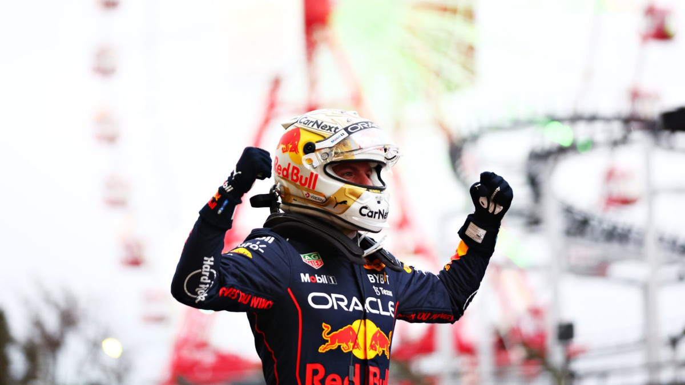

The Singapore Grand Prix was the first race wherein Verstappen could mathematically win the championship. He had to outscore Leclerc by 22 points, Pérez by 13 and George Russell by six. If Verstappen came first with the fastest lap while Leclerc came eighth or lower and Pérez came fourth or lower, or if Verstappen came first without the fastest lap while Leclerc came ninth or lower and Pérez came either fourth without the fastest lap or fifth with, Verstappen would be the champion. Leclerc was on pole after Verstappen abandoned two qualifying laps, the first due to traffic, and the second to ensure there would be enough fuel for the governing body to take a sample at the end of the session, thus avoiding a disqualification from the qualifying session. Verstappen started in eighth. The race was delayed by over an hour due to thunderstorms. Pérez won the race, followed by Leclerc and Sainz. Verstappen came seventh.
ollowing Verstappen's failure to secure the championship at the Singapore Grand Prix, several permutations could net him the championship at the following Japanese Grand Prix. He needed to outscore Leclerc by eight points and Pérez by six. Verstappen would secure pole, in front of Leclerc, Sainz, and Pérez. The race began on time despite poor weather and was red-flagged after two laps following an accident involving Sainz. The deployment of the recovery vehicle during the red flag was criticised; Gasly narrowly missed it in poor weather conditions. Gasly angrily remonstrated that "[he] could have killed [himself]" if he had lost control and hit the vehicle, even at reduced speed. The race resumed at 16:15 local time behind the safety car. Only twenty-eight laps were completed before the race was curtailed due to it passing the three-hour time limit. Verstappen won by just under 27 seconds, with Leclerc coming second and Pérez coming third. After an investigation involving the latter two in the final lap, Leclerc was handed a five-second penalty, meaning he came third behind Pérez. As the race was completed, full points were awarded despite the confusion that only partial points were on offer due to the reduced total length of the race. Verstappen was crowned World Champion, having an insurmountable lead of 113 points, with only 112 still available.
With the Drivers Championship secured, Red Bull Racing set about securing their first Constructors Championship since 2013, which they did by outscoring Ferrari by twenty-two points at the United States Grand Prix. Sainz took his third pole position of the season, and was spun by George Russell into turn one and forced to retire due to the resulting damage. Mercedes had a chance at winning after Lewis Hamilton took the lead through a very slow pit stop for Verstappen. Verstappen overturned a four-second gap to retake the lead on lap 50. This race was notable for a collision between Fernando Alonso and Lance Stroll, which sent Alonso airborne. Alonso continued and finished the race in seventh, only to receive a thirty-second penalty post-race after Haas protested the decision not to show Alonso a black and orange flag due to his right wing mirror dislodging during the race. This penalty was overturned four days later, as the FIA determined that Haas did not submit their protest within thirty minutes of the race finishing and therefore was not admissible.
Verstappen took his sixth pole position and his fourteenth race win of the season at the Mexico City Grand Prix, breaking the record for most wins in a Formula One season, previously held jointly by Michael Schumacher (2004) and Sebastian Vettel (2013). Daniel Ricciardo made his way from thirteenth to seventh in sixteen laps while also dealing with a ten-second time penalty due to a collision with Yuki Tsunoda.
The São Paulo Grand Prix was the third and final sprint weekend of the season, meaning qualifying was on Friday, in wet conditions. Kevin Magnussen took the first pole position of his Formula One career, as well as Haas' first. Magnussen was unable to keep the faster cars at bay during the sprint, and Mercedes were able to lock out the front row for the Grand Prix on Sunday, which they converted into their first one-two finish since the 2020 Emilia Romagna Grand Prix, with Russell taking his first win in Formula One. The race involved collisions between Magnussen and Ricciardo, Verstappen and Hamilton and, Norris and Leclerc. At the conclusion of the race, Verstappen rejected a team order to let teammate Pérez pass him for sixth place, stating that he told the team in the summer to not give Pérez any preferential team orders.
Verstappen took a seventh pole position at the season ending Abu Dhabi Grand Prix and a fifteenth win on the season, extending the record he set in Mexico City. Charles Leclerc held off a faster Sergio Pérez to claim second place, which also got him second in the Drivers Championship. Two Constructors Championship places came down to the final race of the season; Mercedes was unable to pass Ferrari for second after Russell finished fifth and Hamilton retired with a gearbox failure, while Aston Martin and Alfa Romeo finished tied on points, with Alfa Romeo claiming sixth on countback. The race was the final one for Sebastian Vettel, who retired, and for Daniel Ricciardo, Nicholas Latifi, and Mick Schumacher, who were unable to secure a race seat for 2023.
Source: Wikipedia